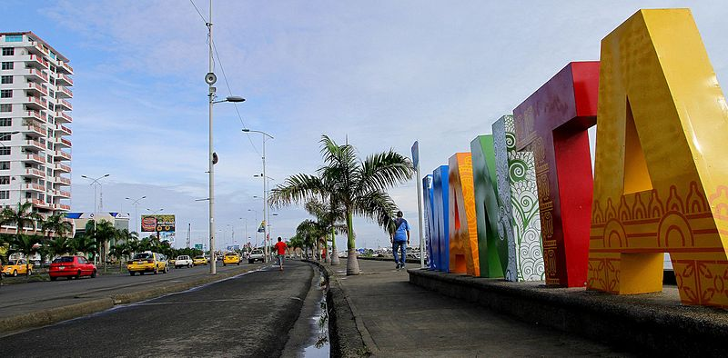

Manta es una ciudad costera ubicada en la provincia de Manabi, en Ecuador. Es conocida por ser uno de los principales puertos pesqueros del pais y por su importante actividad comercial. Ademas, Manta tiene una hermosa playa de arena fina y aguas calidas que atrae a turistas nacionales e internacionales durante todo el tiempo.
Economicamente, Manta es un centro neuralgico para la industria pesquera y tambien alberga importantes instalaciones portuarias que facilitan el comercio maritimo. La ciudad ha experimentado un crecimiento significativo en las ultimas decadas, tanto en terminos de infraestructura como de desarrollo urbano.
En resumen, Manta es una ciudad vibrante y dinamica que combina la tradición con el progreso economico, siendo un destino atractivo tanto para quienes buscan disfrutar de sus playas como para quienes se interesan por su vitalidad comercial e industrial.
| galeria |
| estadistica grafica |
| costumbres |
| sitio turistico |